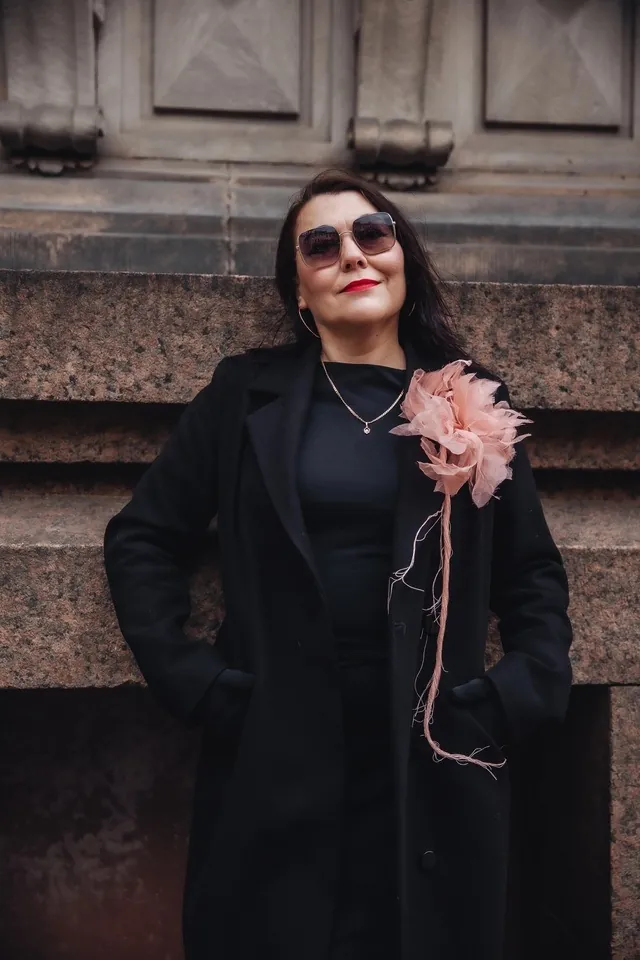
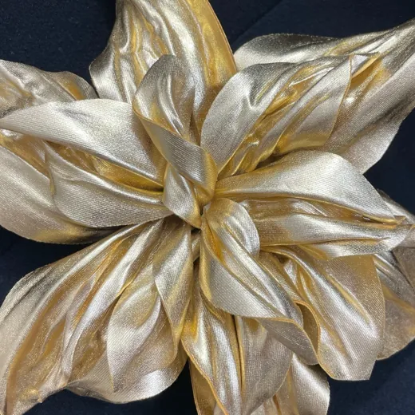
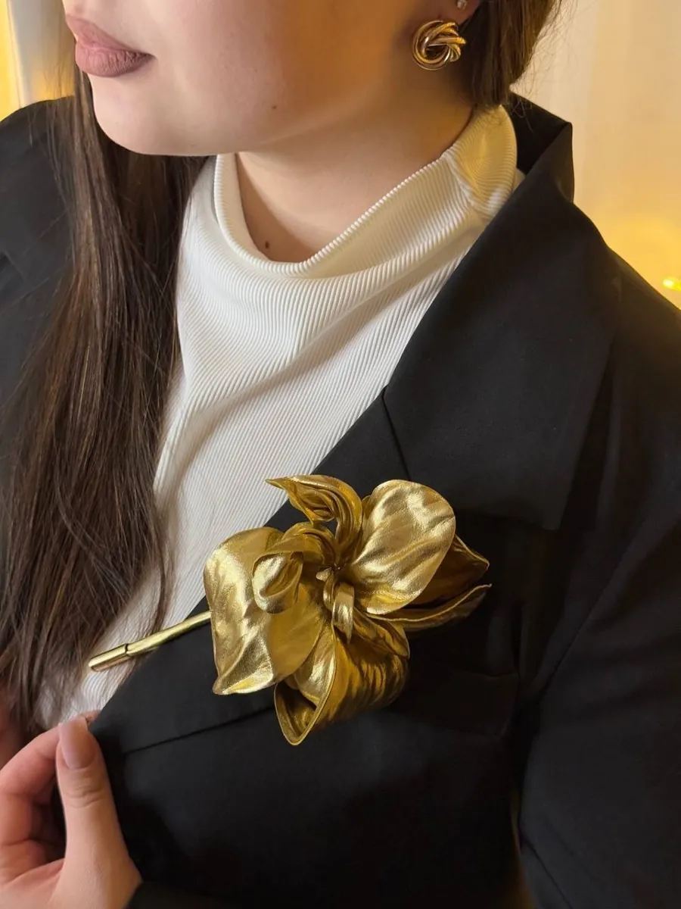
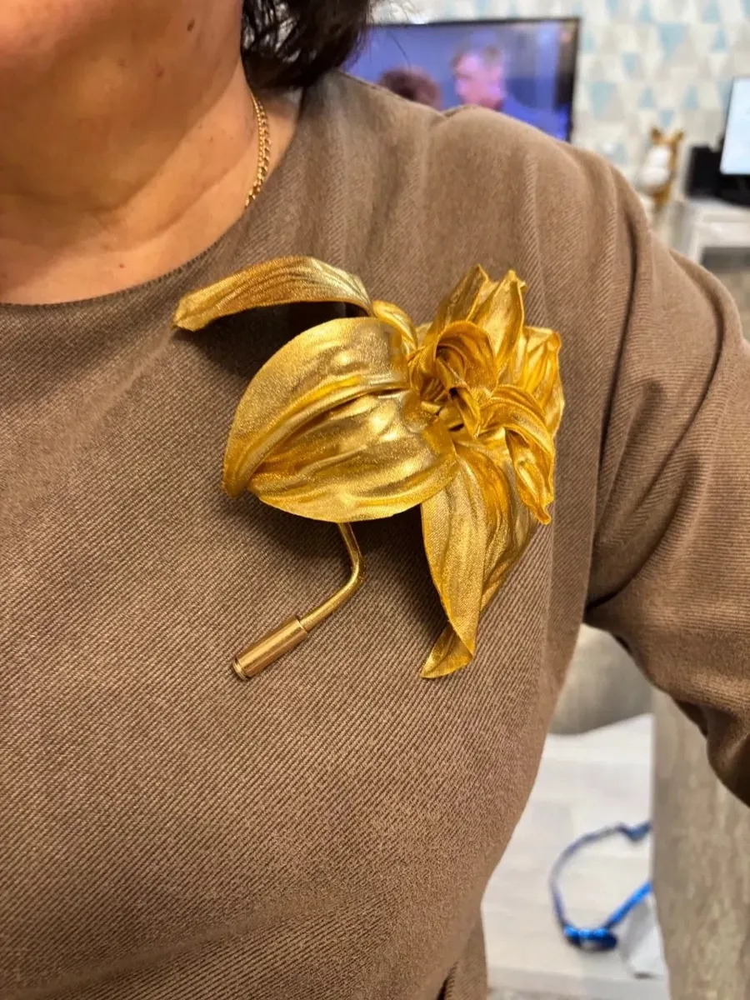
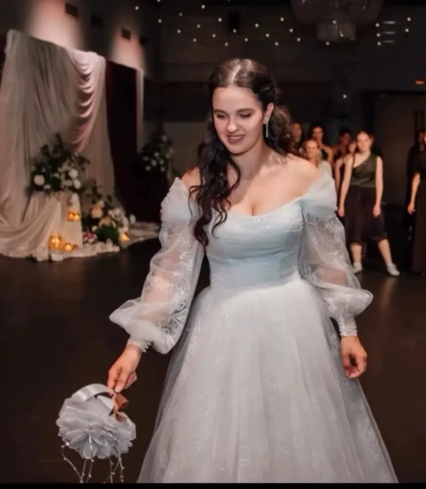
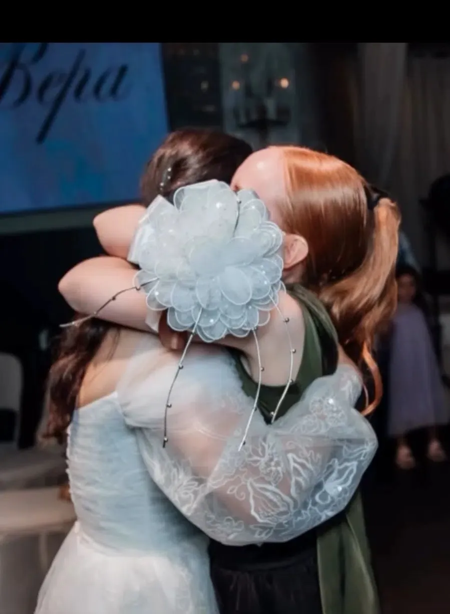
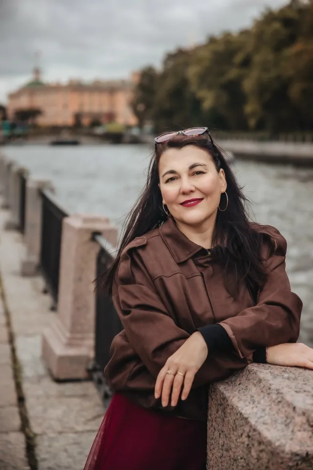
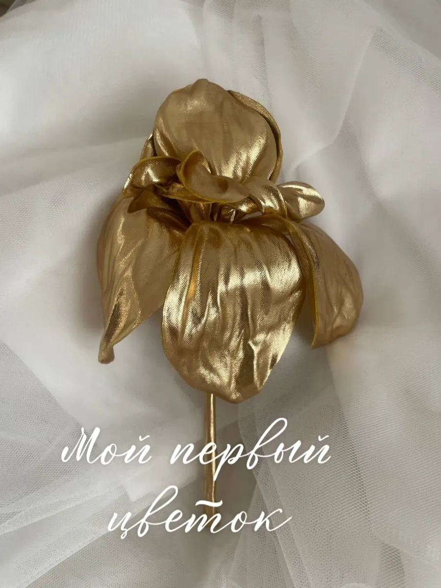
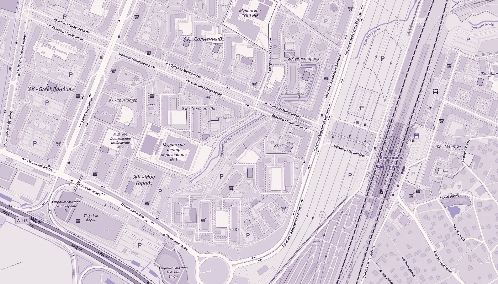

Ручная работа, Мурино и Санкт-Петербург
Броши-цветы из золота, серебра и нежных оттенков
Лилия Агзамова создаёт ирисы, лилии и свадебные букеты из ткани. Ни один цветок не повторяется: форму лепестков и цвет она подбирает под ваш образ.
- 1экземпляр каждого цветка
- с 2025работает в технике
- 3металла: золото, серебро, роза
- Муриносамовывоз у мастера


Лилия Агзамова,
королева цветов
В единственном экземпляре
Каждый цветок Лилия создаёт заново, повторов нет
Не вянет годами
Ткань держит форму лепестков, брошь носится каждый день
Готовый подарок
Брошь приходит в коробке с карточкой мастера
По вашей идее
Сделает цветок под платье, свадьбу или картинку из Pinterest
Работы мастерской
Все броши на фото сделаны руками Лилии. Нажмите на работу, чтобы рассмотреть её и заказать похожую в своём цвете.
Скоро в королевстве: ободки, заколки, серьги и украшения для обуви с цветами. Хотите первыми? Оставьте заявку, Лилия напишет, когда покажет эскизы.
Ваш цветок-тотем по знаку зодиака
Лилия готовит новую линию: цветок для каждого знака, который носят как брошь, на ободке, заколке или в серьгах. Выберите свой знак и запишитесь на первые эскизы.
Подборка цветов предварительная, окончательный цветок и металл Лилия обсудит с вами.
Как носить брошь-цветок
Брошь крепится булавкой на любую ткань. Она подчёркивает характер и делает простой образ праздничным, а большой цветок становится главным украшением наряда.


Цветок можно приколоть к шляпке, платку или сумке. Для невест и выпускниц Лилия делает цветы на заколку и ободок.
Подобрать цветок

Свадебные букеты, которые не завянут
Летом 2026 года Лилию попросили собрать букет невесты по картинке из Pinterest. Она не стала копировать, а создала свой пышный белый букет. После свадьбы его можно поставить дома или передать подруге на счастье.
- Букет невесты и бутоньерка жениха в одной гамме
- Цветы на заколку или ободок для невесты и подружек
- Броши для мам и бабушек в подарок
Обсудить свадебный букетБлагодарю Лилю, волшебного мастера, которая воплотила картинку мечты в реальность! Рекомендую как одного из лучших мастеров по изготовлению цветов на любой ваш праздник.
Людмила Курневич, мама невесты

Среди роз выросла Лилия
Мама хотела назвать дочь Эльвирой, но папа записал её Лилией. Рукоделию научила мама, а бабушка вязала шали, о которых помнят до сих пор. Поэтому первая брошь Лилии, золотой ирис, сразу оказалась на маминой груди.
Лилия любит работать с золотом и серебром: это про роскошь и про её корни. Лилию она считает своим тотемом, а каждый цветок делает из своего состояния, а не по шаблону.
- 11 октября 2025Первый мастер-класс по цветам у мастера Марины и первый золотой ирис
- Лето 2026Первый свадебный букет по картинке невесты
- 9 ноября 2026Открыла «Королевство цветов» и первые заказы на броши
- СкороЦветы-тотемы по знакам зодиака, ободки, серьги и заколки
Что говорят о брошах
Отзывы из комментариев в группе ВКонтакте.
Благодарю Лилю, волшебного мастера Царства Цветов, которая воплотила картинку мечты в реальность! Пусть этот букет приведёт Анастасию к счастливому браку!
Каждая брошь по-своему особенная, носим и любуемся.
Лилия, это невероятная история, которая дарит веру в чудеса и учит добру и тому, как же это красиво: жить с открытым сердцем и помогать людям.
Как заказать брошь
- Выберите работу или опишите идеюПришлите фото платья, пальто или картинку, которая нравится.
- Лилия подберёт цветокПредложит форму, размер и металл: золото, серебро или розовый.
- Создание цветкаКаждый лепесток формируется вручную, срок Лилия назовёт заранее.
- ПолучениеСамовывоз в Мурино или доставка по Петербургу и области.
Частые вопросы
Не нашли ответ? Напишите Лилии ВКонтакте.
Из чего сделаны броши?
Из специальной ткани, которая после обработки держит форму лепестков. Золотой и серебряный блеск даёт сама ткань. Подробно о материале Лилия расскажет при заказе.
Можно повторить брошь с фото?
Можно заказать похожую: тот же цветок, размер и металл. Но каждый цветок Лилия создаёт вручную, поэтому лепестки всегда немного отличаются. Ваш будет единственным.
Сколько стоит брошь?
Цена зависит от размера цветка и сложности. Напишите, какая работа понравилась, и Лилия назовёт стоимость.
Сколько времени занимает заказ?
Обычно несколько дней. Свадебный букет лучше заказать за месяц до праздника, чтобы спокойно обсудить идею.
Можно купить в подарок?
Да, брошь упаковывается в коробку с карточкой мастера. Если не знаете вкус человека, Лилия поможет выбрать цвет.
Как ухаживать за брошью?
Храните в коробке, не мочите и не сминайте лепестки. Пыль можно сдуть или смахнуть мягкой кистью.
Заказать брошь или букет
Оставьте телефон, Лилия перезвонит или напишет, уточнит цвет и размер и назовёт цену.

Где найти королевство
- Адрес
- Мурино, бульвар Менделеева, 3
- Телефон
- +7 951 626-10-47
- ВКонтакте
- vk.ru/club243111395
- Время
- По договорённости, встречу лучше согласовать заранее
